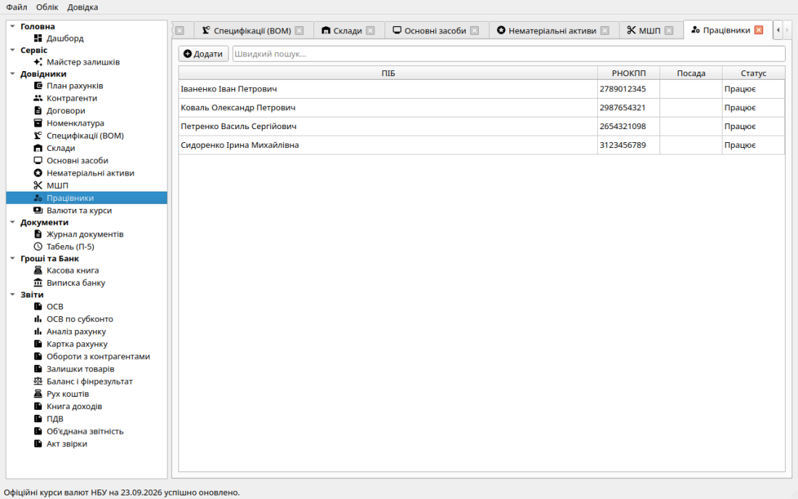
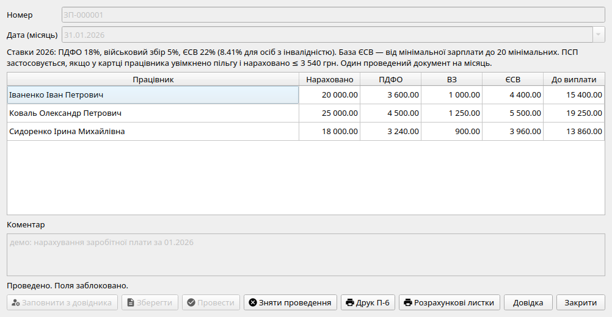
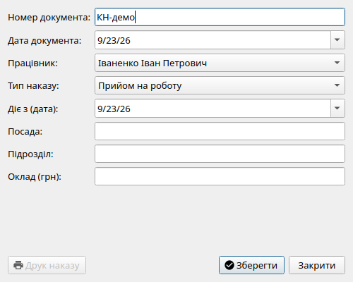
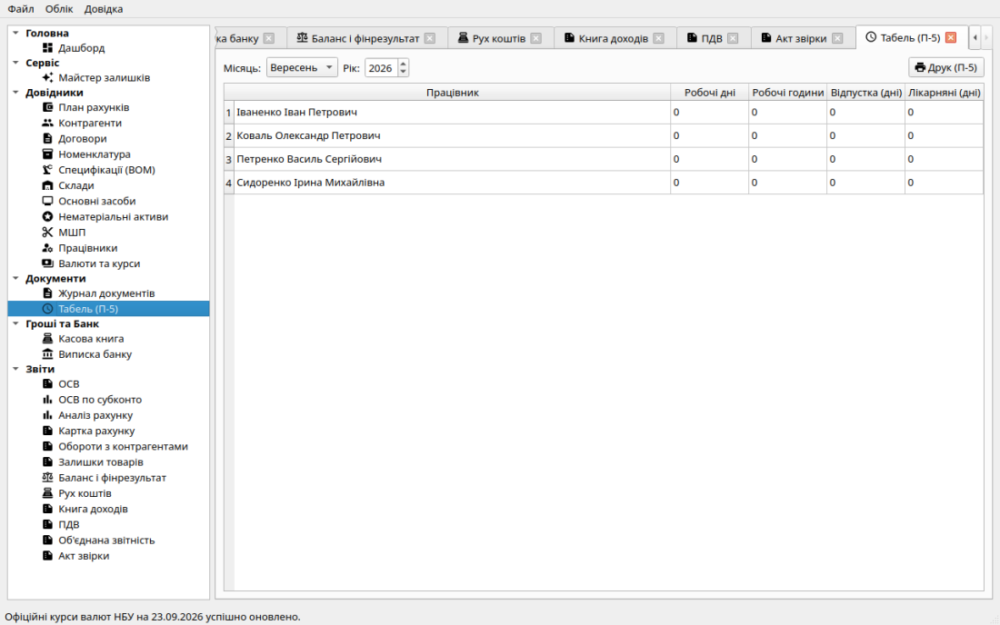
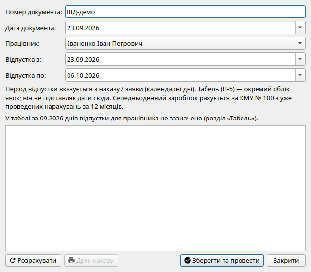
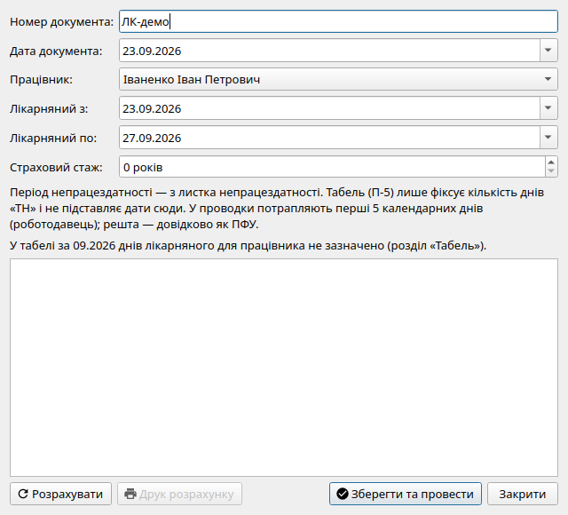

Модуль заробітної плати в системі «Фінік» призначений для кадрового обліку працівників, автоматизованого розрахунку окладів, утримання податків (ПДФО, Військовий збір) та нарахування єдиного соціального внеску (ЄСВ) за чинними нормами законодавства України 2026 року.

Розділ «Працівники»: картки співробітників, податковий номер РНОКПП, дата прийому, посадовий оклад та ознака пільги за інвалідністю.У розділі навігації «Працівники» ведеться облік штатного персоналу підприємства. При створенні картки вказуються:
Нарахування з датою поза 2026 роком блокується: ставки задані лише для 2026.
| Показник / Податок | Ставка у 2026 р. | Бухгалтерський рахунок та правила |
|---|---|---|
| Мінімальна заробітна плата | 8 647,00 грн | Базовий соціальний стандарт для контролю мінімального страхового внеску ЄСВ. |
| ЄСВ (базова ставка) | 22,0% | Субрахунок 651 («За розрахунками із загальнообов'язкового державного соціального страхування»). Нараховується понад оклад на витрати підприємства (рахунок 92). |
| ЄСВ (особи з інвалідністю) | 8,41% | Субрахунок 651. Застосовується за наявності підтвердженої довідки МСЕК / прапорця в картці працівника. |
| ПДФО (Податок на доходи фізосіб) | 18,0% | Субрахунок 642 («Розрахунки за податком на доходи фізичних осіб»). Утримується із суми нарахованого окладу. |
| Військовий збір | 5,0% | Субрахунок 645 («Розрахунки за військовим збором»). Утримується із суми нарахованого окладу. |
У картці працівника є ознака «ПСП» (п. 169.1 ПКУ). Якщо вона увімкнена і нарахований дохід за місяць не перевищує 3 540 грн, база ПДФО зменшується на 1 340 грн (ставки 2026). ПСП не зменшує базу ЄСВ і військового збору.
У довіднику «Працівники» зберігаються ПІБ, РНОКПП, посада, підрозділ, оклад, дата прийняття, ознака інвалідності (ЄСВ 8.41%) та ознака ПСП. Підрозділ також можна змінити кадровим наказом про переведення.
Нарахування здійснюється щомісяця останнім календарним днем розрахункового періоду документом «Нарахування зарплати» (префікс номера ЗП):

Форма нарахування зарплати: розрахунок окладу, ПДФО, Військового збору, ЄСВ та суми «на руки» для кожного працівника.Для оформлення руху кадрів на підприємстві використовується кнопка «Кадровий наказ» у Журналі документів. Підтримуються наступні типи наказів:

Діалог кадрового наказу дозволяє обрати тип події, працівника, посаду та новий оклад.Для заповнення табеля перейдіть у розділ «Табель (П-5)» у боковому меню. Перед розрахунком зарплати за місяць необхідно вказати кількість фактично відпрацьованих днів і годин, а також відмітити дні відпусток, лікарняних та неявок. Табель автоматично розраховує підсумкові години за місяць.

Табель робочого часу дозволяє швидко вносити відпрацьовані години (вісімки), відпустки (В) та лікарняні (ТН).З документа «Нарахування зарплати» ви можете згенерувати та роздрукувати необхідні кадрові регістри:
Нарахування — у Журналі документів («Створити» → відпускні / лікарняні). Це окремо від Табеля (П-5): табель фіксує кількість днів явок/неявок за місяць, а документ нарахування потребує дат з наказу / листка непрацездатності і рахує суми (КМУ № 100, страховий стаж). У діалозі показується довідка з табеля, але дати не підставляються автоматично.

